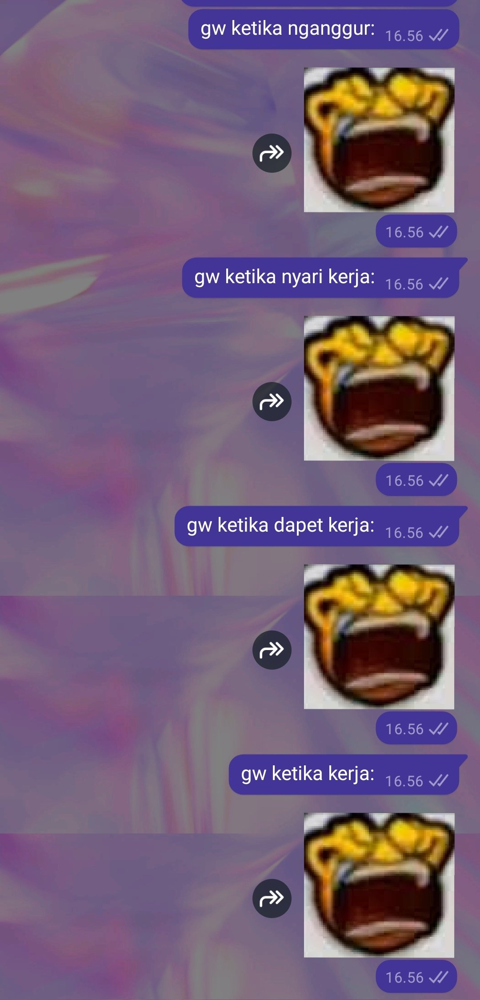

[2025/09/16]
Keadaan Saat Ini
Halo semuanya! Dah lama ga bertemu..!
Pengen update kalian sedikit tentang kehidupanku saat ini... sekarang gw kerja fulltime di toko cetak! Yeeey! Masih anak baru sih dan sy ga sengaja sering berbuat masalah... Tapi berusaha keras buat gak jadi beban keluarga lagi wkwkwk. Ga bercanda gw dapet pekerjaan ini hoki banget, awalnya lamar sebagai orang pembersih meja di bar, terus tau2 waktu mau mulai wawancara, pewawancaranya ternyata pemilik barnya dan dia juga pemilik toko cetak, dia lihat resume gw (seniman freelance 6 tahun) trus langsung masukin gw kerja sebagai asisten meja depan di kantor cetaknya... jadi sekarang setiap hari kerja gw komunikasi sama orang lewat email dan nelpon dan pake photoshop + illustrator menyiapkan macam desain buat dicetak... sejauh ini gw sdh pengalaman cetak stiker, poster, papan, dll. Kerjaku sedikit susah/khusus tapi rekan kantor gw semua baik dan sabar pada sy dan bosnya juga baik bgt, jadi sy senang.
Gara2 kerja fulltime + mengelola toko online, sekarang gw ud jarang banget punya tenaga buat main medsos dan gambar... Maaf... Patreon gw sampe harus dihenti karena gitu kekurangan waktu gambar. Punya worklife balance ternyata susah ya?
Ngomong2. Toko stikerku! Pada ujung2nya lancar bgt, dapat pesanannya banyak! Sy bahagia bgt bisa nemu jalan yg lebih rendah tenaga dibanding jualan komisi ke klien... Saat ini sy masih ragu2 jadi seniman online mau ngapain tapi sedikit demi sedikit sy terus menjalankan apa yg mau dicapai... Mungkin dalam setahun atau dua tahun, sy bisa buka sebuah klub cetakan gambar bulanan dan mulai ngirim gambarku ke pelanggan lewat pos... Gokil bgt sih kalo bisa sukses..
Belakangan ini gw juga sering nulis di dalam buku harian. Pake pen dan buku nota Gramed kyk orang kuno. Gw ud nulis di dalam bbrp buku harian hampir setahun, sdh isi penuh dua buku. Kegiatan ini menenangkan bgt, kadang2 pulang setelah kerja gw duduk bisa nulis sampe dua jam. Kalo ada yang penasaran sama journaling, coba aja deh. Sudah hampir setahun dan sampe skrng gw masih blom bosen sama kegiatan ini. Kalo masih perlu motivasi buat buka bukumu, kamu bisa beli stiker lucu dan murah buat tempel di dalamnya kyk gw :3
Itu aja sih yg mau disampaikan hari ini :p Makasih banyak sdh baca!

est. 2024 © amfmradio.org